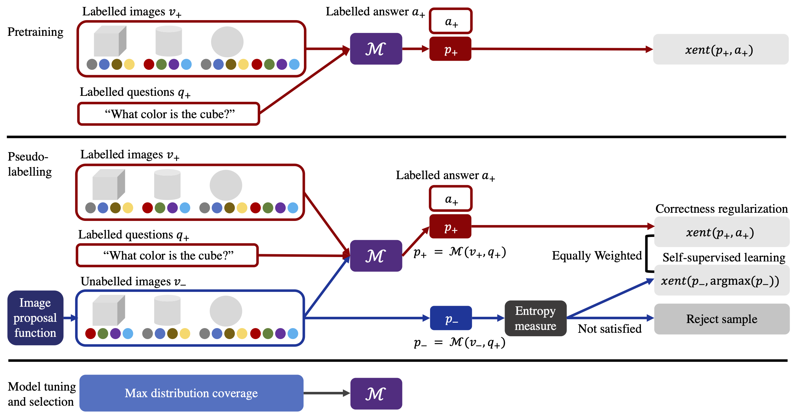

DisCo: Improving Compositional Generalization in Visual Reasoning through Distribution Coverage
TMLR

Abstract
We present DisCo, a learning paradigm for improving compositional generalization of visual reasoning models by leveraging unlabeled, out-of-distribution images from the test distribution. DisCo has two components. The first is an iterative pseudo-labeling framework with an entropy measure, which effectively labels images of novel attribute compositions paired with randomly sampled questions. The second is a distribution coverage metric, serving as a model selection strategy that approximates generalization capability to test examples drawn from a different attribute combination distribution to the train set, without the use of labeled data from the test distribution. Both components are built on strong empirical evidence of the correlation between the chosen metric and model generalization, and improve distribution coverage on unlabeled images. We apply DisCo to visual question answering, with three backbone networks (FiLM, TbD-net, and the Neuro-Symbolic Concept Learner), and demonstrate that it consistently enhances performance on a variety of compositional generalization tasks with varying levels of train data bias.
Code release
We release code for DisCo here. Thanks!